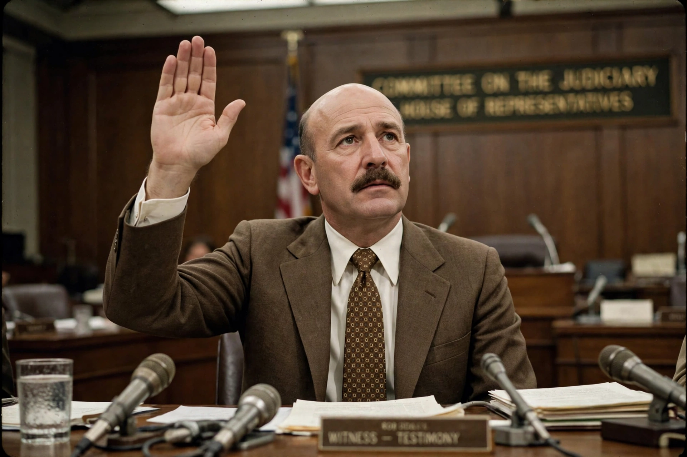

| G. Gordon Liddy | |
| Born | George Gordon Battle Liddy, 30 November 1930, Brooklyn, New York, U.S. |
|---|---|
| Died | 30 March 2021 (aged 90), Mount Vernon, Virginia, U.S. |
| Occupations | FBI agent, lawyer, White House aide, radio commentator |
| Known for | Leading the Watergate burglaries; Will (autobiography) |
| Criminal charges | Conspiracy, burglary, illegal wiretapping; served about 52 months (sentence commuted 1977) |

George Gordon Battle Liddy (November 30, 1930 – March 30, 2021) was an American lawyer and FBI agent who became infamous as the chief operative of the White House "Plumbers" unit and the organiser on the ground of the Watergate break-ins.
Liddy served as an FBI agent in the 1950s, then worked as a prosecutor in Dutchess County, New York, where his flamboyant style — including firing a revolver into a courtroom ceiling during a closing argument — drew notice. After an unsuccessful congressional run, he joined the Nixon administration, first at the Treasury Department and then in the White House.
In 1971 Liddy joined the Special Investigations Unit (the Plumbers), partnering with E. Howard Hunt; together they directed the break-in at the office of Daniel Ellsberg's psychiatrist. As general counsel of the Committee to Re-elect the President, Liddy drafted the extravagant "Operation Gemstone" proposals for kidnapping, sabotage and wiretapping, a scaled-down version of which was approved. He personally led the team that burgled the Democratic National Committee at the Watergate complex in May 1972 and supervised the second, disastrous attempt on 17 June 1972.
Convicted of conspiracy, burglary and illegal wiretapping, Liddy famously refused to cooperate or testify, kept silent through his trial, and served about four and a half years in prison — the longest of any Watergate figure — before President Jimmy Carter commuted his sentence in 1977.
Liddy reinvented himself as an author (his autobiography Will was a bestseller), actor, and syndicated conservative radio talk-show host. He traded on an image of iron discipline, memorably claiming to have trained himself to endure pain by holding his hand over a candle flame. He died in 2021.